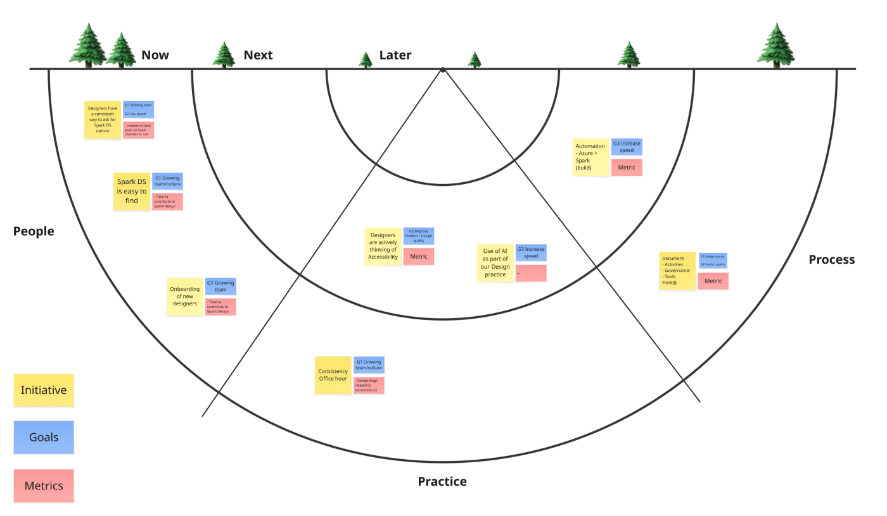

Driving an App-First Transformation through designOps
2026
Eneco, Oxxio
Design System Lead
Figma, Claude Code, React & Compose
When I took ownership of the design system for Oxxio and Eneco, the goal wasn't just to fix UI inconsistencies — it was to rebuild trust. Trust in the system, between design and engineering, and from users in a product that didn't yet feel reliable. The design system became the lever for an App-first transformation.
Overview
The ecosystem I inherited was fragmented and difficult to navigate: 10+ Figma libraries, 4 separate icon
libraries, 2 legacy design systems coexisting with a new one, broken dark mode, inconsistent UI patterns
across platforms, and a significant mismatch between design and code.
Teams were moving fast — but shipping low-quality, inconsistent experiences, leading to rework and
frustration. The design system had lost all credibility. Designers didn't trust it. Developers didn't rely
on it. And previous attempts to fix it had failed. Meanwhile, only ~30% of users relied on the app.
My Role
I led the definition and execution of a multi-brand design system supporting both Oxxio and Eneco,
used by ~40 contributors across design and engineering. My role sat at the intersection of strategy,
design, and operations: defining the vision and roadmap, building a shared system across two brands
(90% shared components), aligning design and engineering (React + Compose), and establishing contribution
and governance models.
While remaining hands-on, my focus was to enable teams to scale the system — not depend on me to maintain it.
① Creating a Single Source of Truth
The first step was to simplify. I consolidated multiple fragmented systems into one unified foundation:
a token-based architecture (colors, typography, spacing), multi-brand theming for Oxxio & Eneco,
light and dark mode support, and alignment between design tokens and code.
This created a shared language across platforms — from design to development.
② Removing Ambiguity
One of the biggest sources of inconsistency was decision-making. To address this, I introduced clear
frameworks: guidelines for when to use Material Design vs Custom vs Native components, cross-platform
usage guidelines for React & Compose, and documentation focused on real use cases, not abstract
rules.
Instead of debating solutions, teams could now move forward with confidence.
③ Driving Adoption through DesignOps
The real challenge wasn't building the system — it was getting people to use it. I focused heavily on
DesignOps to make the system visible (monthly demos, internal newsletters), understandable (simplified
libraries, clearer structure), accessible (cleaned and reorganized Figma files), and trustworthy
(consistent quality and communication).
I also introduced rituals to align teams regularly, continuous stakeholder engagement, AI-powered workflows
(Figma MCP, Claude) to speed up production, and design-to-code validation by reviewing implementation.
Over time, the system became part of how teams worked — not something extra.

④ Setting the Quality Bar
Trust wasn't rebuilt through documentation — it was rebuilt through quality. I made deliberate choices:
designing key components myself to demonstrate standards, taking strong opinionated decisions when needed,
and engaging deeply with engineers — including challenging discussions.
This wasn't always easy, especially with initial resistance from developers — but it was necessary.
Consistency and clarity became the foundation for rebuilding trust.
Impact
- Adoption steadily increased across teams
- Delivery speed improved through better alignment
- UI inconsistencies significantly reduced across platforms
- The system contributed directly to the success of the App-first initiative
Challenges & Learnings
- Developers were initially resistant, requiring alignment and negotiation
- Many decisions involved political discussions at senior levels
- A design system is not just a UI library — it's a tool for change management
What's Next
The system is now trusted — the next step is to scale it further: introducing adoption and quality metrics, strengthening contribution workflows, improving design–code automation, and continuing to align web and app experiences. The goal is to evolve from a strong foundation to a fully scalable, cross-platform system.